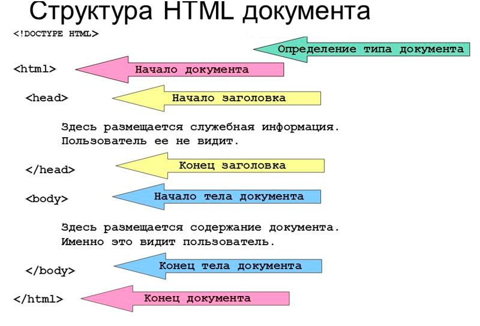

Вступление.
Синтаксис.
По способу записи все теги делятся на два вида:
- с закрывающим элементом;
- без закрывающего элемента;
Синтаксис:
(имя_тега атрибут=”значение”) содержимое тега (/имя_тега) - тег с закрывающим элементом;
(имя_тега атрибут=”значение”) - тег без закрывающего элемента.
Блочные теги.
Блочные теги занимают всю ширину родителя-экрана (как балка в строительстве, которая занимает всю ширину здания). Соответственно каждый новый тег с его содержимым будет начинаться с новой строки, независимо от обьема контента в нем. Все строительные теги являются блочными.
Ссылка на htmlbook.ruСтрочные теги.
Размер строчного тега равен размеру контента в нем. Теги идут в одну строку, ряд - один за другим, в отличии от блочных.
Ссылка на htmlbook.ruБлочно-строчные теги.
Они являются строчными, но на них действует ряд свойств CSS, которые к простым строчным тегам не применяются. Например, тег img
Вложенность
(Имя тега)
- открывающий элемент.
Содержимое тега
- здесь могут быть другие теги, текст, изображения, ссылки и т.д. Это и есть вложенность.
(/Имя тега)
- закрывающий элемент.
Внутри строчных тегов не может быть блочных тегов. Но внутрь блочных тегов мы можем поместить как блочные элементы, так и строчные. В теги для контента мы не вкладываем строительные теги, за исключением тега а (содержимым этого тега может быть блочный, строительный).
Строительные теги.
Строительные теги предназначены для создания структуры, каркаса, конструкции как всей верстки, так и отдельно взятого блока, а уже внутри этого каркаса мы помещаем контент. В качестве примера хорошо подойдет стройка высотного здания, где колонны и перекрытия и есть наши строительные теги.
У этих тегов нет обязательных атрибутов, чаще всего используется атрибут class.
Атрибуты:
title=”всплывающий текст” (при наведении на элемент вызывается всплывающая
подсказка)
class=”имя-класса” (связующее звено между таблицами стилей CSS и файлом html. Значение атрибута
(его имя) не уникальное, может повторяться множество раз (присваиваться другим тегам). Значение может быть
любым, в нижнем регистре.)
id=”id-name” («Уникализирует» свой тег. Значение этого
атрибута должно быть уникальным на странице (другого тега с таким же id быть не должно). Значение может быть
любым, в нижнем регистре.)
div
Элемент div является блочным элементом и предназначен для выделения фрагмента документа с целью изменения вида содержимого. Как правило, вид блока управляется с помощью стилей. Как и при использовании других блочных элементов, содержимое тега div всегда начинается с новой строки. После него также добавляется перенос строки. Не имеет предназначения – внутри этого тега может быть что-угодно. Этот тег используем всегда, когда мы по смыслу не сможем применить какой-то другой тег.
header
Шапка сайта. Используется для верхней части сайта или блока. Блочный тег.
nav
Используется для организации навигации либо меню. Блочный тег.
main
Основной контент сайта. Принято использовать один раз – основной уникальный контент страницы. Блочный тег.
footer
«Где лежат лыжи и закрутки». Используется для нижней части сайта или блока. Блочный тег.
Теги для контента.

Теги для работы с содержимым страницы – текстом, картинками, ссылками и тд. Теги для контента могут играть роль строительных тегов.
Ссылки на бесплатный урок «Фрилансер по жизни» по данной темеh1
Блочный тег. Самый главный заголовок. Записывается только один раз на странице.
h2...h6
Блочные теги. Заголовки имеют встроенные стили (размеры, жирность, отступы). Могут повторяться на странице множество раз.
p
Блочный тег. Для текста. Имеет встроенные стили (отступы).
ul, li
Блочный тег. Маркированный список. ul здесь является контейнером списка, а li - пунктами списка. Отдельно они не используются.
ol, li
Блочный тег. Нумерованный список. ol здесь является контейнером списка, а li - пунктами списка. Отдельно они не используются.
span
Строчный тег. Предназначен для выделения части текста, чтобы в дальнейшем видоизменять его с помощью CSS.
mark
Строчный тег. Предназначен для выделения части текста, имеет встроенные стили (желтый background текста).
a
Строчный тег. Предназначен для создания ссылок на документ, сайт, файл. В содержимом
тега
может быть текст, изображения и другие теги. Имеет свои встроенные стили.
Его атрибуты:
href=” ”
(указывает куда мы перейдем, нажав на ссылку, значением атрибута может быть другая html страница, сайт, путь
к картинке или файлу);
target=”_blank ” (при нажатии на ссылку, содержимое атрибута href откроется в
новом окне браузера. Указываем только тогда, когда ссылка ведет на внешний ресурс. Также ссылка может вести
пользователя внутрь страницы: для этого мы определенному тегу на странице, к которой должна вести ссылка,
присваиваем id= ”имя” (имя id и class с цифры начинаться не может), а значение id указываем в href ссылки
через #, href=”#имя”.
img
Блочно-строчный тег. Предназначен для вставки изображений в нашу веб-страницу. Обязательные атрибуты тега - src=” ”(путь к картинке, которую мы хотим подключить) и alt=” ”(поисковая оптимизация; доступность; альтернативный текст, который покажется, когда наша картинка не загрузится. Можно оставить пустым.). Другие атрибуты (рекомендуется): width(ширина), height (высота).
br
Используется для перевода строки в том месте, где он установлен.